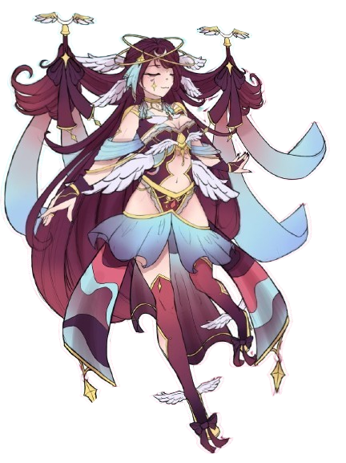

Mayazinha é uma VTuber Anjo serafim, Memoriadora dos sonhos e Artista! Com um estilo único e uma energia contagiante, ela adora compartilhar momentos incríveis em suas transmissões ao vivo.
Sobre Mayazinha

O que você encontra nas lives da Niikkio?
- 💬 Just Chatting e interação com os fãs
- 🎮 Gameplay de diversos jogos
Quando assistir?
Niikkio faz lives regularmente nos seguintes dias:
- 📅 Durante a Semana - às 16h ou às 21h
Redes Sociais
Mensagem especial da Mayazinha!
PROJETO: "Fala aí VTuber!"
— MayazinhaIX 🔮✨️ VTuber (@MayazinhaIX) February 13, 2025
Caso alguém tenha interesse em participar eu ficaria muito feliz! Basta entrar em contato cmg! Ja temos alguns VTubers convidados dispostos a participarem das primeiras lives!
Criei o projeto com o objetivo das pessoas conheceram mais VTubers! 💕☝️ pic.twitter.com/iKQbdPQLPW